LoRa
物联网应用中的无线技术有多种，可组成局域网或广域网。组成局域网的无线技术主要有2.4GHz的WiFi，蓝牙、Zigbee等，组成广域网的无线技术主要有2G/3G/4G等。这些无线技术，优缺点非常明显，可如下图总结。在 低功耗广域网（Low Power Wide Area Network, LPWAN） 产生之前，似乎远距离和低功耗两者之间只能二选一。当采用LPWAN技术之后，设计人员可做到两者都兼顾，最大程度地实现更长距离通信与更低功耗，同时还可节省额外的中继器成本。
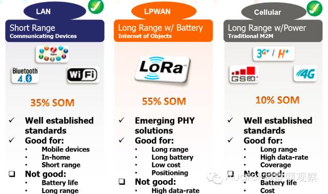
LoRa 是LPWAN通信技术中的一种，是美国Semtech公司采用和推广的一种 基于扩频技术的超远距离无线传输方案。这一方案改变了以往关于传输距离与功耗的折衷考虑方式，为用户提供一种简单的能实现远距离、长电池寿命、大容量的系统，进而扩展传感网络。目前，LoRa 主要在全球免费频段运行，包括433、868、915 MHz等。
LoRa技术具有远距离、低功耗（电池寿命长）、多节点、低成本的特性。
下图以USA情况为例，从 灵敏度、链路预算、覆盖范围、传输速率、发送电流、待机电流、接收电流、2000mAh电池使用寿命、定位、抗干扰性、拓扑结构、最大终端连接数 等参数上比较了Sigfox、LTE-M、ZigBee、WLAN、802.11ah和 LoRa的区别。后续的LoRa技术小型科普文（下）将具体解释以上的部分参数。
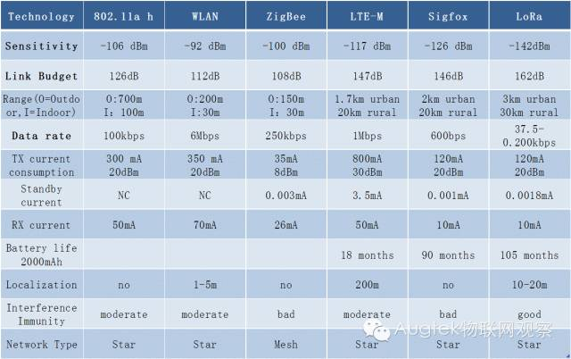
LoRa网络构成
LoRa网络主要由 终端（可内置LoRa模块）、网关（或称基站）、Server和云 四部分组成。应用数据可双向传输。
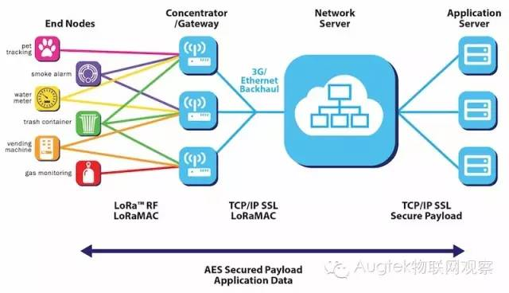
LoRa联盟
LoRa联盟是2015年3月Semtech牵头成立的一个开放的、非盈利的组织，发起成员还有法国Actility，中国AUGTEK和荷兰皇家电信kpn等企业。不到一年时间，联盟已经发展成员公司150余家，其中不乏IBM、思科、法国Orange等重量级产商。产业链（终端硬件产商、芯片产商、模块网关产商、软件厂商、系统集成商、网络运营商）中的每一环均有大量的企业，这种技术的开放性，竞争与合作的充分性都促使了LoRa的快速发展与生态繁盛。

网络部署
目前LoRa网络已经在世界多地进行试点或部署。据LoRa Alliance早先公布的数据，已经有9个国家开始建网，56个国家开始进行试点。中国AUGTEK在京杭大运河完成284个基站的建设，覆盖1300Km流域；美国网络运营商Senet于2015年中在北美完成了50个基站的建设、覆盖15,000 平方英里（约38850平方千米），预计在第一阶段完成超过200个基站架设；法国电信Orange宣布在2016年初在法国建网；荷兰皇家电信kpn宣布将在新西兰建网，在2016年前达到50%覆盖率；印度Tata宣布将在Mumbai和 Delhi建网；Telstra宣布将在墨尔本试点……(后续的文章将详细介绍部分公司利用LoRa技术做出的应用)
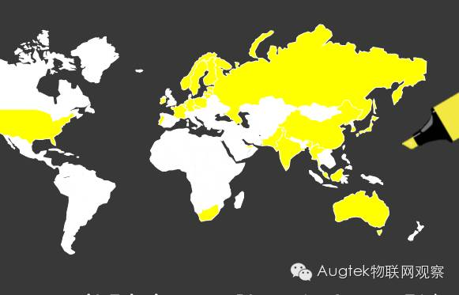
LoRaWAN协议
LoRaWAN 是LoRa联盟推出的一个基于开源的MAC层协议的低功耗广域网（Low Power Wide Area Network, LPWAN）标准。这一技术可以为电池供电的无线设备提供局域、全国或全球的网络。LoRaWAN瞄准的是物联网中的一些核心需求，如安全双向通讯、移动通讯和静态位置识别等服务。该技术无需本地复杂配置，就可以让智能设备间实现无缝对接互操作，给物联网领域的用户、开发者和企业自由操作权限。
LoRaWAN网络架构 是一个典型的星形拓扑结构，在这个网络架构中，LoRa网关是一个透明传输的中继，连接终端设备和后端中央服务器。网关与服务器间通过标准IP连接，终端设备采用单跳与一个或多个网关通信。所有的节点与网关间均是双向通信，同时也支持云端升级等操作以减少云端通讯时间。
终端与网关之间的通信是在不同频率和数据传输速率基础上完成的，数据速率的选择需要在传输距离和消息时延之间权衡。由于采用了扩频技术，不同传输速率的通信不会互相干扰，且还会创建一组“虚拟化”的频段来增加网关容量。LoRaWAN的数据传输速率范围为 0.3kbps至37.5kbps，为了最大化终端设备电池的寿命和整个网络容量，LoRaWAN网络服务器通过一种速率自适应（Adaptive Data Rate , ADR）方案来控制数据传输速率和每一终端设备的射频输出功率。
全国性覆盖的广域网络瞄准的是诸如关键性基础设施建设、机密的个人数据传输或社会公共服务等物联网应用。
关于安全通信，LoRaWAN一般采用 多层加密 的方式来解决： 一、独特的网络密钥（EU164），保证网络层安全； 二、独特的应用密钥（EU164），保证应用层终端到终端之间的安全； 三、属于设备的特别密钥（EUI128）。
LoRaWAN网络根据实际应用的不同，把 终端设备划分成A/B/C三类： Class A：双向通信终端设备。这一类的终端设备允许双向通信，每一个终端设备上行传输会伴随着两个下行接收窗口。终端设备的传输槽是基于其自身通信需求，其微调是基于一个随机的时间基准（ALOHA协议）。Class A所属的终端设备在应用时功耗最低，终端发送一个上行传输信号后，服务器能很迅速地进行下行通信，任何时候，服务器的下行通信都只能在上行通信之后。
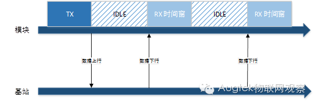
Class B：具有预设接收槽的双向通信终端设备。这一类的终端设备会在预设时间中开放多余的接收窗口，为了达到这一目的，终端设备会同步从网关接收一个Beacon，通过Beacon将基站与模块的时间进行同步。这种方式能使服务器知晓终端设备正在接收数据。
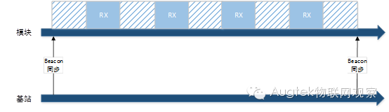
Class C：具有最大接收槽的双向通信终端设备。这一类的终端设备持续开放接收窗口，只在传输时关闭。
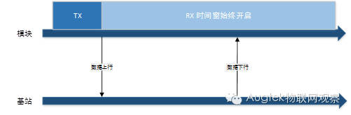
LoRa技术要点
一般说来，传输速率、工作频段和网络拓扑结构 是影响传感网络特性的三个主要参数。传输速率的选择将影响系统的传输距离和电池寿命；工作频段的选择要折中考虑频段和系统的设计目标；而在FSK系统中，网络拓扑结构的选择是由传输距离要求和系统需要的节点数目来决定的。
LoRa融合了 数字扩频、数字信号处理和前向纠错编码技术，拥有前所未有的性能。此前，只有那些高等级的工业无线电通信会融合这些技术，而随着LoRa的引入，嵌入式无线通信领域的局面发生了彻底的改变。
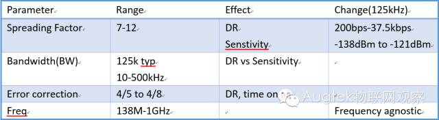
前向纠错编码技术 是给待传输数据序列中增加了一些冗余信息，这样，数据传输进程中注入的错误码元在接收端就会被及时纠正。这一技术减少了以往创建“自修复”数据包来重发的需求，且在解决由多径衰落引发的突发性误码中表现良好。一旦数据包分组建立起来且注入前向纠错编码以保障可靠性，这些数据包将被送到数字扩频调制器中。这一调制器将分组数据包中每一比特馈入一个“展扩器”中，将每一比特时间划分为众多码片。
即使噪声很大，LoRa也能从容应对
LoRa调制解调器经配置后，可划分的范围为64-4096码片/比特，最高可使用4096码片/比特中的最高扩频因子（12）。相对而言，ZigBee仅能划分的范围为10-12码片/比特。
通过使用高扩频因子，LoRa技术可将小容量数据通过大范围的无线电频谱传输出去。实际上，当你通过频谱分析仪测量时，这些数据看上去像噪音，但区别在于噪音是不相关的，而数据具有相关性，基于此，数据实际上可以从噪音中被提取出来。扩频因子越高，越多数据可从噪音中提取出来。在一个运转良好的GFSK接收端，8dB的最小信噪比（SNR）需要可靠地解调信号，采用配置AngelBlocks的方式，LoRa可解调一个信号，其信噪比为-20dB，GFSK方式与这一结果差距为28dB，这相当于范围和距离扩大了很多。在户外环境下，6dB的差距就可以实现2倍于原来的传输距离。
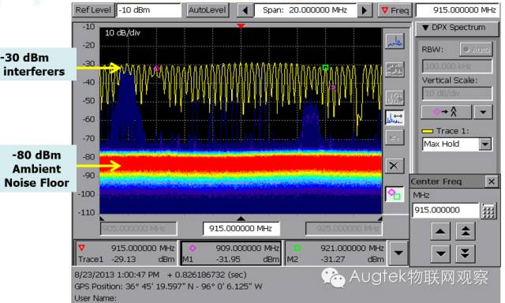 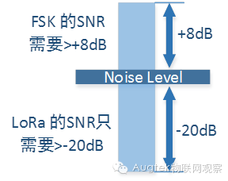
超强的链路预算，让信号飞的更远
为了有效地对比不同技术之间传输范围的表现，我们使用一个叫做“链路预算”的定量指标。链路预算包括影响接收端信号强度的每一变量，在其简化体系中包括发射功率加上接收端灵敏度。AngelBlocks的发射功率为100mW (20dBm)，接收端灵敏度为-129dBm，总的链路预算为149dB。比较而言，拥有灵敏度-110dBm（这已是其极好的数据）的GFSK无线技术，需要5W的功率(37dBm)才能达到相同的链路预算值。在实践中，大多GFSK无线技术接收端灵敏度可达到-103dBm，在此状况下，发射端发射频率必须为46dBm或者大约36W，才能达到与LoRa类似的链路预算值。
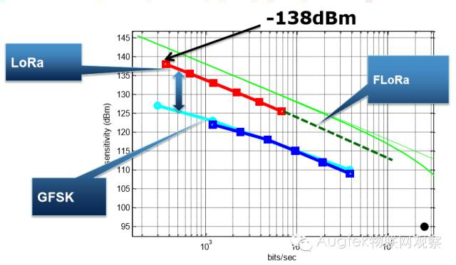
因此，使用LoRa技术我们能够以低发射功率获得更广的传输范围和距离，这种低功耗广域技术正是我们所需的。